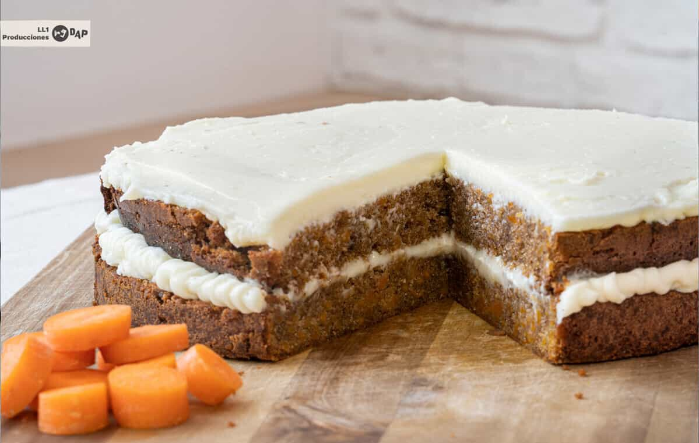

Tarta de zanahoria: la receta de carrot cake más fácil del mundo
Descripcion
De todas las recetas de tarta de zanahoria que hemos probado en casa,
esta es la más fácil y rápida de hacer. Te damos nuestra palabra de que
queda ¡deliciosa! Es tan sencilla que será tu favorita

Dificultad
Tiempo
Fácil
40 minutos
Ingredientes
300 gramos de zanahoria (unas 3 zanahorias grandes)
200 gramos de harina
200 gramos de azúcar moreno (le dará un toque más rústico. Yo uso
panela, pero se puede usar también azúcar blanco)
3 huevos
100 mililitros de aceite de girasol
2 cucharadas de levadura en polvo
1 cucharadita de canela
1 cucharadita de jengibre
Sal
Una pizca de bicarbonato
60 gr de mantequilla a temperatura ambiente o blanda
225 gr de queso cremoso (tipo Philadelphia o mascarpone)
110 gr de azúcar glas
3 o 4 gotas de extracto de vainilla
Nueces para decorar- opcional
Instrucciones
Pela y ralla las zanahorias.
Echa las zanahorias ralladas en un bol con la harina, el azúcar, la
sal, el bicarbonato, la levadura y las especias. Conforme mezclas,
verás que las zanahorias sueltan su jugo y, junto con el azúcar y las
especias, la masa se va impregnando de su dulzor y sabor
característico. Se va haciendo pegajosa y también esponjosa. Aquí
reside el verdadero secreto del bizcocho.
En otro cuenco, mezcla los ingredientes líquidos: los huevos, el
aceite y la vainilla.
Incorpora, poco a poco, la mezcla líquida con la de zanahoria.
Remueve cuidadosamente hasta tener una masa homogénea. Luego pon en el
molde.
TRUCO EXPERTO: Golpea el molde con la masa dentro varias veces sobre
la encimera. Esto hará que se rompan las burbujas de aire y el
bizcocho no se baje al sacarlo del horno. Es un truco que me enseñaron
hace poco, lo he probado con varios bizcochos y ¡no falla!
A continuación salteamos la ternera, sin necesidad de añadir aceite, en
una sartén a fuego medio alto. Damos una vueltas para que no se peguen
las tiras y, cuando se haya evaporado todo el líquido que suelta la
carne, la retiramos del fuego.
Hornea durante 40 o 45 minutos a 150 grados. Este es EL truco para que
el bizcocho suba, la temperatura.
Para hacer el glaseado, mezcla con una cuchara de madera (o con el
robot de cocina si tienes) la mantequilla y el queso. Añade el azúcar
y la vainilla. Remueve bien
Cuando el bizcocho se enfríe, cubre con el glaseado y decora con
nueces